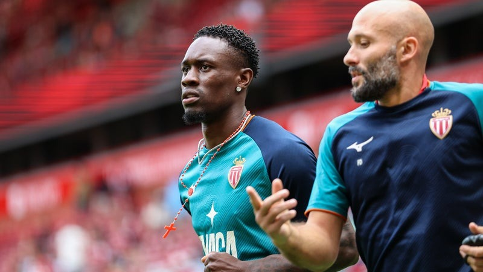

Transferts
Folarin Balogun écarté par Monaco de la Ligue Conférence
Resté à l'AS Monaco après l'échec de son transfert à Everton, Folarin Balogun ne figure pas sur la liste des joueurs inscrits en Ligue Conférence.